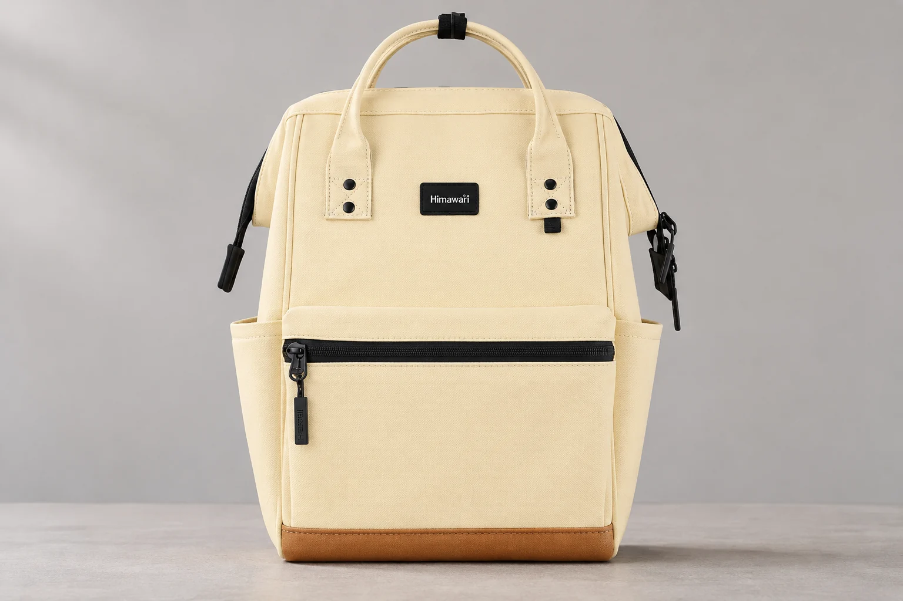
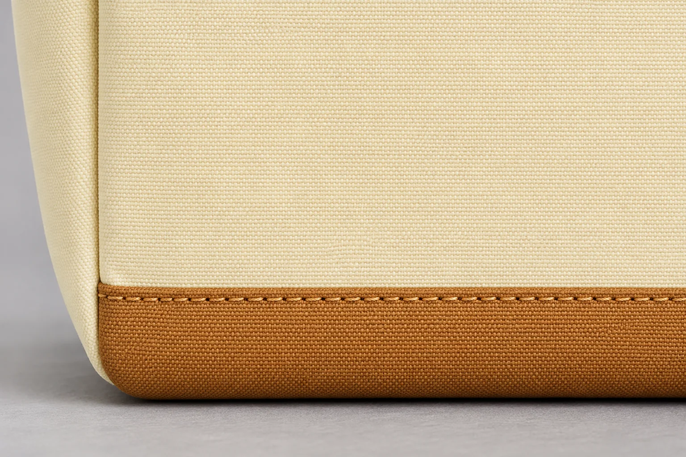
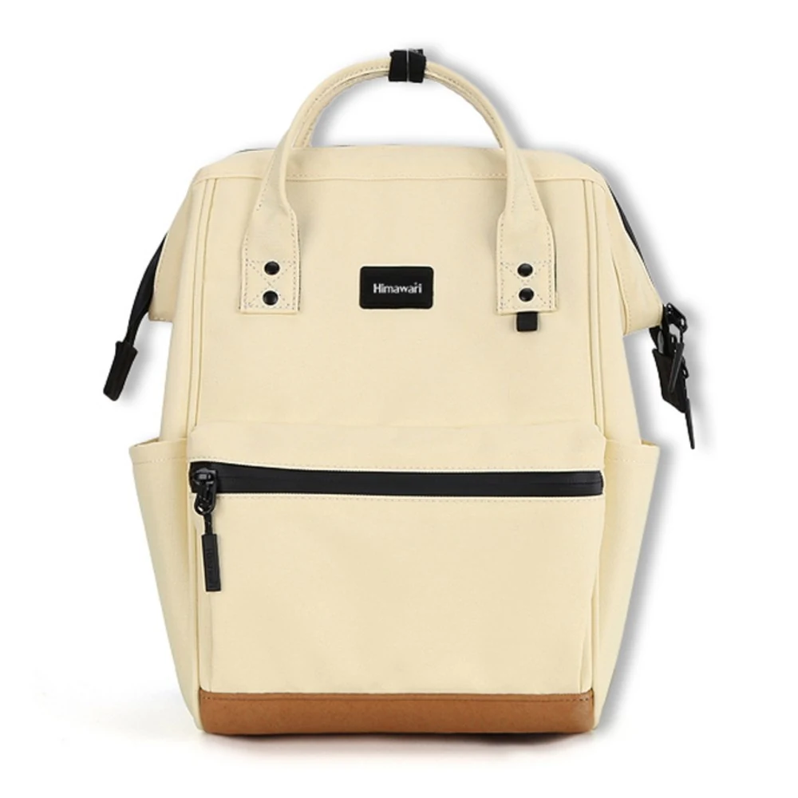

백팩 바닥 모서리가 닳아 보이면 어디를 살펴야 할까

백팩을 비우다가 바닥 한쪽이 다른 곳보다 옅어 보일 때가 있습니다. 앞에서 보면 얼룩 같고 옆에서 보면 실 한 올이 나온 듯합니다. 이럴 때는 천의 색이 달라진 자리부터 보고 두 원단이 만나는 봉제선은 따로 살핍니다. 바닥의 희끗한 자리와 봉제선 상태를 구분해 두면 다음에 같은 모서리를 볼 때 달라진 부분을 비교하기 쉽습니다. 평소 가방을 내려놓는 습관을 돌아볼지, 사용을 멈추고 상태를 문의할지는 두 곳을 살펴본 뒤에 정할 수 있습니다.
히마와리 No.124S 옐로우의 공개 상품 사진에는 연한 노란색 앞면과 그 아래 갈색 바닥이 보입니다. 두 색이 바뀌는 경계를 따라 가로로 실밥이 이어집니다. 가방 외부 크기는 제조사 카탈로그 기준으로 가로 22cm, 세로 33cm, 폭 14cm입니다. No.124S는 두 색의 경계가 눈에 잘 띄어 원단과 봉제선의 위치를 설명하기에 좋은 예입니다. 사진은 그 위치를 짚는 데만 씁니다.
첫 관찰은 내용물을 뺀 뒤 같은 조명에서
가방을 비워 깨끗한 테이블에 올려놓습니다. 평소 바닥과 닿는 모서리 하나를 정한 뒤 정면에서 보세요. 같은 빛 아래에서 반대쪽 모서리도 봅니다. 한쪽만 빛을 받고 있으면 원단의 접힌 부분이 더 밝거나 어두워 보일 수 있습니다. 조명은 그대로 두고 가방만 돌려 반대 방향에서도 같은 모서리를 보세요. 접힌 부분에 드리웠던 그림자가 옮겨 갔다면 처음에 옅어 보였던 자리를 다시 봅니다. 빛이 닿는 방향이 바뀌어도 색 차이가 같은 자리에 남는지 살핍니다.
가방이 비어 모서리 주변이 접혀 있다면 안쪽에서 천을 살짝 받쳐 접힘을 폅니다. 손을 깊이 넣어 팽팽하게 밀 필요는 없습니다. 천을 펴자 얼룩처럼 보이던 자리가 사라졌다면 비슷한 각도로 다시 접어 보세요. 처음에 본 모양이 같은 자리에서 나오는지 비교하면 됩니다. 모서리를 펴도 일정한 위치에 보풀이나 색 차이가 남는다면 그 자리와 봉제선 사이가 얼마나 떨어져 있는지 살펴봅니다.
원단 면의 변화는 바닥 접촉부부터
가방을 옆으로 기울여 바닥이 테이블에 닿던 자리를 봅니다. 희끗한 부분이 있다면 그 자리에서 시작해 둥근 모서리를 돌아 갈색 원단이 위쪽 봉제선에 닿는 곳까지 눈으로 따라갈 수 있습니다. 보풀이나 색 차이가 바닥 면에서 끝나는지, 모서리를 지나 봉제선 가까이까지 이어지는지 살핍니다. 반대쪽에서도 바닥과 닿던 자리부터 같은 순서로 살펴보세요. 두 모서리에서 색이 달라 보이는 범위를 비교하기 쉽습니다. 한 곳만 희끗하거나 잔털이 올라와 있다면 주변 원단의 결도 같이 보세요. 마른 먼지가 얹히면 원단 결이 가려져 보일 수 있고 보풀이 올라온 자리는 각도를 바꿔 보면 잔털이 보일 수 있습니다. 같은 곳에 흙과 보풀이 함께 있을 수도 있습니다. 한 번 훑어본 결과만으로 변색 원인까지 정할 필요는 없습니다.
제품 안내에는 부드러운 천으로 부분 관리하고 그늘에서 말리라고 적혀 있습니다. 봉제선에 벌어진 틈이 보이지 않고 표면에 먼지가 붙어 있다면 부드러운 천으로 주변을 가볍게 닦습니다. 가방이 마른 뒤 같은 자리에서 결을 다시 보세요. 색이 달라 보인다고 세게 문지르거나 늘어진 실을 잡아당겨 상태를 확인할 필요는 없습니다. 사진은 천으로 닦기 전과 후에 비슷한 각도에서 남겨두면 좋습니다. 주변의 갈색 원단도 함께 나오게 찍으면 어디까지 희끗해 보이는지 비교하기 쉽습니다.

봉제선에서는 실과 원단 사이의 틈을 봅니다
갈색 바닥과 연한 노란색 앞면이 만나는 선을 가운데에서 모서리 쪽으로 따라가 봅니다. 다른 구간과 비슷한 간격으로 실이 이어지는지 봅니다. 중간에 들린 실이 있다면 그 실이 어느 부분과 이어지는지 가까이에서 보세요. 실만 보다 보면 원단 두 쪽이 만나는 가장자리의 틈을 놓치기 쉽습니다. 바닥의 다른 모서리도 같은 방식으로 보면 원래 접혀 보이는 자리를 비교할 수 있습니다.
관찰할 때는 가방을 비운 채 바닥을 받쳐 놓고 앞과 옆에서 각각 봅니다. 원단 두 쪽을 잡아 벌리지 않습니다. 손으로 힘을 주지 않았는데도 봉제선이 벌어져 보이거나 원단이 찢어져 있다면 무게를 더 실어 확인하기보다 그 상태를 기록해 두는 편이 좋습니다. 한 장은 가방 전체에서 어느 모서리인지 보이게 찍고 다른 한 장에는 실과 원단의 경계를 담습니다.

다음에 비교할 수 있도록 놓는 방향을 적어둡니다
관찰 결과를 남길 때는 가방을 정면에서 본 기준으로 왼쪽인지 오른쪽인지 적습니다. 예를 들어 정면에서 봤을 때 왼쪽 아래 갈색 원단에 색 차이가 있고 그 위쪽 봉제선에는 눈에 띄는 틈이 없다고 쓰면 됩니다. 사진을 찍어 뒀다면 이 메모와 함께 보관하세요. 모서리만 가까이 찍은 사진을 보더라도 이 메모를 참고하면 다음에 다시 볼 자리를 찾을 수 있습니다. 안쪽에서 바닥을 볼 수 있다면 같은 위치의 안감도 눈으로 확인해 보세요. 메모에는 겉의 색 차이와 안감에서 본 흔적을 나눠 적습니다. 가려진 부분이 있다면 실제로 보인 범위까지만 적어두세요.
가방을 내려놓을 때 어느 모서리가 먼저 바닥에 닿는지도 살펴보세요. 한쪽 모서리를 먼저 대고 기울여 놓는 일이 잦거나 내려놓으면서 모서리가 바닥을 쓸면 그 위치를 확인해 둘 수 있습니다. 평소 바닥에 닿거나 스치는 자리가 메모에 적은 색 차이나 보풀의 위치와 겹치는지 보세요. 다음에 가방을 비웠을 때는 메모에 적은 방향으로 가방을 놓습니다. 처음과 같은 빛에서 사진과 메모를 곁에 두고 모서리를 보세요. 바닥이 접혀 있으면 처음에 본 모양과 비교할 수 있도록 다시 안쪽에서 천을 가볍게 받칩니다. 색 차이나 보풀이 원단 면에만 남아 있는지, 두 원단이 만나는 경계까지 달라져 보이는지 살핍니다. 실이 끊기거나 틈이 더 보이는 경우에는 사진과 모델명을 챙겨 판매처에 상태를 문의하세요.